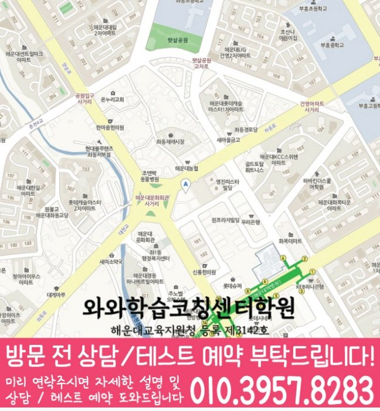

MIDDLE SCHOOL MATH GUIDE
좌동 중2 수학학원
부산 해운대구 좌동 중2 수학학원 선택을 위해 와와학습코칭센터 좌동점 공개 정보와 중2 내신·오답 관리 기준, 수업 가능 학교와 상담 체크 항목을 정리했습니다.
좌동부산 해운대구
중2수학 가능 학년 기재



핵심 답변
좌동 중2 수학학원, 무엇부터 확인해야 할까요?
좌동에서 중2 수학학원을 비교할 때는 현재 진도만 보지 말고 이전 개념 공백, 풀이 과정, 오답 재확인 방식과 시험 전 계획을 함께 살펴야 합니다. 어려운 문제보다 기본 유형의 작은 실수가 점수를 흔드는 학생이라면 특히 관리 기록이 다음 수업에 어떻게 반영되는지 확인하는 것이 좋습니다.
LOCAL ACADEMY GUIDE
부산 해운대구 좌동 중2 수학 학습 설계
부산 해운대구 좌동에서 중2 수학을 준비하는 학생을 위해, 와와학습코칭센터 좌동점은 현재 실력 진단을 바탕으로 개념 보강–유형 학습–오답 관리까지 이어지는 맞춤형 학습 흐름을 제공합니다. 수학은 단원별 약점을 정확히 잡고, 영어·국어·영수 과목 학습 태도와 병행 관리로 내신 성적을 안정적으로 끌어올립니다.
좌동 중2 수학 수업의 핵심 포인트
문제부터 몰아서 풀기보다, 중2 수학의 취약 단원과 자주 틀리는 유형을 먼저 확인해 학습 순서를 설계합니다.
설명만 반복하지 않고, 좌동 중2 내신 스타일에 맞춘 유형을 단계적으로 훈련해 풀이 속도와 정확도를 함께 올립니다.
틀린 이유를 개념/계산/조건 해석/문장 이해로 분류해 같은 실수를 반복하지 않도록 학습 피드백을 제공합니다.
영어, 국어, 영수까지 학습 루틴을 맞춰 중2 종합 내신 준비에 필요한 공부 습관을 함께 잡습니다.
선생님 특징
학생이 어디에서 막히는지(공식 적용, 조건 처리, 계산 실수)를 질문과 풀이 점검으로 확인하고 필요한 개념을 연결해 줍니다.
학교 진도와 시험 범위를 반영해 과제·복습·오답 정리까지 계획적으로 운영해 성적이 오르는 흐름을 만듭니다.
수학 문제 해석과 서술형 대비까지, 다른 과목과의 학습 방식 차이를 줄여 중2 전 과목 자신감을 키웁니다.
숙제 이행, 복습 주기, 오답 노트 정리까지 점검해 수업 시간이 끝난 뒤에도 실력이 유지되게 돕습니다.
수업 진행방식(좌동 중2 수학)
1. 현재 수준 확인
중2 수학 단원별 이해도와 최근 시험/과제 오답을 바탕으로 약점 포인트를 정리합니다. 좌동 중2 내신 대비에 필요한 범위를 먼저 잡습니다.
2. 개념 정리 + 대표 유형 학습
핵심 개념을 정확히 잡고, 해운대구 좌동 내신 경향에 맞는 대표 유형부터 단계적으로 반복 훈련합니다.
3. 오답 관리와 실력 업 피드백
틀린 문제는 다시 푸는 것으로 끝내지 않고, 오답 원인을 분류해 다음 풀이에서 적용할 해결 방법을 정리합니다.
4. 영어·국어·영수 병행 로드맵
수학 학습과 함께 영어(문법·독해), 국어(문학/비문학), 영수(수학 연계)까지 공부 루틴을 맞춰 내신 준비 효율을 높입니다.
학년별(중등) 학습 전략
중1
- 기초 개념을 단단히 잡고, 중등 수학 유형 적응을 빠르게 합니다.
- 틀린 이유를 습관적으로 기록해 오답 패턴을 줄입니다.
중2
- 내신 단원별 개념-유형-오답을 연결해 성적 상승을 목표로 합니다.
- 조건 해석, 계산 정확도, 서술형/문제 해석 실수를 집중 관리합니다.
중3
- 학교 내신 대비와 연계해 실전형 문제 풀이력을 강화합니다.
- 오답 누적을 줄이고, 시험 당일 실수 유형을 사전에 차단합니다.
시험 대비
- 해운대구 좌동 학교별 시험 범위를 반영해 복습 계획을 조정합니다.
- 시험 전에는 자주 틀리는 유형과 실수 패턴을 우선 점검합니다.
좌동 중2 수학학원 선택 시 체크포인트
오답이 반복되는 이유를 찾아 재발 방지까지 설계하는지 확인해 보세요.
좌동 중2 수학 내신은 단원별 비중이 달라 계획이 성적을 좌우합니다.
영어·국어·영수와 함께 학습 루틴을 관리하면 중2 전 과목 성과가 안정됩니다.
부산 해운대구 좌동 중2 수학학원 찾는다면, 와와학습코칭센터 좌동점이 학생의 현재 상태를 기준으로 필요한 개념과 유형, 오답까지 한 번에 정리해드립니다. 상담을 통해 해운대구 좌동 내신 대비 학습 방향을 자세히 안내드립니다.
VERIFIED LOCAL FACTS
좌동 센터 정보와 수업 확인 항목
공개된 센터 자료만 사용했으며, 기재되지 않은 학교나 운영 조건은 임의로 만들지 않았습니다.
부산광역시 해운대구 좌동 좌동로 88 울트라타워 5층 508호
공개 센터 자료의 수학 가능 학년에 중2가 포함되어 있습니다. 실제 반 편성과 일정은 와와학습코칭센터 좌동점 상담에서 확인해야 합니다.
해운대교육지원청 등록 제3142호
공개 자료의 중학교 안내
공개 자료의 수학 가능 학년
센터 교습비 자료 확인상담 전 체크리스트
좌동 중2 수학학원 비교 전에 적어둘 내용
최근 시험지, 현재 교재와 학교 진도를 준비합니다.
개념 문제와 응용 문제 중 어느 구간에서 풀이가 멈추는지를 확인합니다.
수업 외에 복습할 수 있는 실제 시간을 계산합니다.
반 편성, 시간표, 결석·보강 기준과 교습비를 확인합니다.
FAQ & PARENT VIEW
좌동 중2 수학학원 자주 묻는 질문과 학부모 상담 관점
질문과 답변은 같은 내용으로 JSON-LD에도 반영했습니다. 아래 상담 관점은 특정 성과를 보장하는 후기가 아니라 학부모가 비교할 때 참고할 수 있도록 재구성한 예시입니다.
중2 수학 수강 가능 여부는 어디에서 확인하나요?
공개된 와와학습코칭센터 좌동점 가능 학년 정보에 중2 수학이 포함되어 있습니다. 실제 시간표, 반 편성 및 시작 가능일은 변동될 수 있어 상담 시 다시 확인해야 합니다.
선행보다 복습이 필요한 학생도 상담할 수 있나요?
현재 학년 진도를 무조건 앞당기기보다 문제를 푸는 데 필요한 이전 개념을 찾아 현재 단원과 연결하는 방향으로 상담할 수 있습니다. 실제 적용 범위는 진단 결과를 바탕으로 확인합니다.
상담할 때 수업 시간표와 교습비도 확인해야 하나요?
네. 공개된 교습비 자료와 함께 주당 횟수, 시작·종료 시각, 결석·보강 기준, 시험 기간 일정 변동을 같은 표에 적어 비교하는 것이 좋습니다.
좌동 중2 수학학원 상담 전에 무엇을 준비하면 좋나요?
최근 시험지, 현재 수학 교재, 학교 진도와 반복 오답을 준비하면 좋습니다. 특히 개념 문제와 응용 문제 중 어느 구간에서 풀이가 멈추는지를 메모해 가면 상담 기준을 구체적으로 세울 수 있습니다.
좌동 중2 수학학원은 어떤 학생에게 맞는지 어떻게 판단하나요?
어려운 문제보다 기본 유형의 작은 실수가 점수를 흔드는 학생이라면 진단 과정과 재풀이 확인 방식을 먼저 살펴보세요. 학원 이름이나 문제량만 비교하기보다 학생이 혼자 풀 수 있게 되는 과정을 확인해야 합니다.
RELATED GUIDES
좌동 및 인접 학습 페이지
과목 중심 안내와 기존 지역 중심 안내를 함께 확인할 수 있습니다.